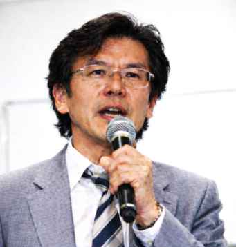
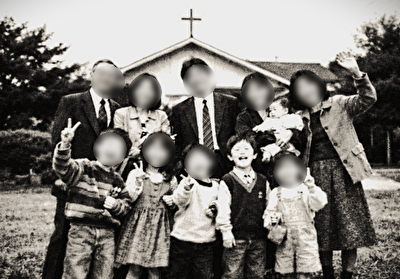

圓山 越（まるやま こゆる）です。おじさんに片足突っ込んでいる牧師です。
ここは、ある出来事のあとに作りました。いまさら感ありますが…（汗）
（むずかしい話もしますが、まあ気楽にどうぞ）

略歴
- 1971年 山口県生まれ
- 牧師の家庭に育つ
- 神学部卒
- 永遠の光キリスト教会 設立
このブログについて
実名でこんなことを書くのは、牧師として、また一個人として、あまりに不謹慎で、配慮に欠けて いることは自覚しています。……それでも、ここ以外のどこに私の喉の詰まりを吐き出せというのでしょう。 私の教会、私の家族、誰に話せばいいのですか。神にさえ、もう声が届かない気がしているのに。
こういうのは本当は人に見せるもんじゃないのですが、日が経っても頭の中が片付かないので、 ここに書こうと思います。気分が悪くなったら閉じてください（汗）
私は牧師の家に生まれて、物心ついた頃から「私たちは神に愛されている」という言葉を、家 の中で何度も聞いて育ちました。朝の祈りの終わりでも、夕飯のあとでも、風邪をひいた日でも 、私が叱られた日でも、親が疲れて黙り込んだ日でも、最後はそこへ戻るんです。子どもの私は、 世界が崩れそうになるたびに、その言葉のところへ連れていかれて、そこで落ち着く、というのを 繰り返していた気がします。
「あなたは愛されている」
だから私は、その言葉を「慰めの決まり文句」みたいに覚えたのではなく、もっと深いところで 「そういう世界なんだ」と思い込んでしまったんだと思います。神はいる、神は見ている、神は愛 してくださっている、だから私はここにいるし、どこかで転んでも最後は拾われる、という感じで 、私は自分の骨組みを作ってしまった。
牧師になってからも、そのままでした。説教の中で、私は同じ言葉を何度も口にしてきました。 句を添える日もあるし、証し話に絡める日もあるし、黙祷のあとに短く言うだけのときもあるけど 、結局のところ、私は最後にそこへ戻りがちで、礼拝の時間が落ち着いて終わるように、みなさん の顔がほどけるように、その言葉を置いてきたつもりでした。
礼拝が終わって、会衆が帰る前の廊下で、誰かが立ち止まって相談してくることがあります。家族 の話、身体の話、仕事の話、言いにくい話。私は聞きながら、祈りながら、最後に自分が信じてい ることを渡す。あれは、私にとって「神の愛は本物だ」という確認でもあったし、「この言葉がある 限り、私は牧師でいられる」という確認でもあったのだと思います。今となっては、そういう部分が あったのを否定できないです。
……で、その言葉が、最悪の形で戻ってきました。
私の教会にいた若い信徒が、自ら命を絶ちました。噂話にしたくないので細部は書きません。通夜 の夜、参列者が引いて、教会が静まり返った頃に、お母様が私のところへ来て、何も言わずに封筒を 差し出しました。
中身は遺書でした。私は、いまでも紙の匂いまで覚えている気がします。
「私は、今のままで、完全に愛されている」
そして最後に、こう書いてあった。
「これ以上、どこへ行けばいいんですか？」
その一行を見たとき、私は、体の内側で何かが沈むのを感じました。あの子にとって私の言葉は、 外へ出るための扉ではなく、行き止まりの壁みたいになっていたのかもしれない 、という考えが浮かんできたからです。私はあの子を見捨てないというつもりで語って いたのに、あの子は「もうここから先はない」と受け取ってしまったのかもしれない。
あの子は、変わりたかったんだと思います。苦しくて、どうにかしたくて、助けを求めていた。 それなのに私は毎週、壇上から「そのままでいい」「今のままで完璧だ」と言い続けた。私の中で はそれは神の愛の話で、神の側があなたを離さない、という約束のつもりだったのに、あの子の中 では、違う形になっていたのかもしれない。
私は否定したかった。「そんなつもりはない」と言いたかった。けれど喉が固まって、声になりま せんでした。言い訳を口にした瞬間、私は牧師としての顔のまま、自分を守るだけの人間になる気 がして、それが怖かった。
それでも私は、その日以来、説教で同じ言葉を前より多く言うようになりました。おかしいのは 分かってるのに、止まらない。神に愛されているという確信が、自分の芯だったからです。芯が揺 らいだとき、私は、揺らいだ芯にしがみつくしかなかった。信仰が揺らいだ、というより、信仰が 私の避難所みたいになってしまった、という方が近いかもしれない。
いつのまにか、礼拝のあとに人が残るようになりました。特別な案内を出したわけでもなく、誰 かが「話していきませんか」と言い出したわけでもなく、ただ帰り支度が遅れる人がいて、椅子を 片付けないままの人がいて、そのうち数人が円みたいになって座る。私は片付けをしながら、声を かけられたら混じる、という程度で、最初はそんな感じでした。

その時間を、誰が言い出したのか分からないけど、「愛の集い」と呼ぶようになりました。ふざけ てるのか、照れ隠しなのか、たぶん両方で、私も笑って流したのに、その呼び名だけは残ってしま った。私は「集いを作った」つもりはないのに、名前が付くと、それはそこにあるものになるんで すね（汗）
愛の集いでは、私は結局、いつもの話をします。神はあなたを見捨てないこと、あなたたちは愛され ているということ。けれど少し変わったのは、私が言う前に、参加者同士が言い合うようになったことで す。泣いている人がいると、隣の人が小さな声で言う。「あなたは愛されているよ」と。
私は、その場面を「神の愛が届いている」と思って見ていました。けれど、遺書の一行が頭に刺さった ままの私が、その場面を見ているということ自体が、
愛の集いは、教会の中だけに留まりませんでした。集いに来た人が、家に帰って家族に同じ言葉 を言う。病院の待合で、小さな声で同じ言葉を言う。メモ帳の端に書く。手帳に挟む。誰かの携帯 の留守電に残す。
私はそれを止められませんでした。止めたいとも思えなかった。止めたら、あの子の死が私の中 で崩れる気がしたからです。あの言葉が人を追い込むことがある、と真正面から認めてしまったら 、私は自分の人生の最初から全部を疑い直さないといけない。家で言われてきた言葉も、私が自分 を支えてきた言葉も、説教で言ってきた言葉も、全部です。
ここがいちばん醜いところで、私はそれを自覚しています。あの子の死が、私の言葉と無関係だっ た、と言いたくて言いたくて仕方がない。無関係だと言えないなら、せめて神の愛の話を崩したく ない。崩したら、私が私でなくなる気がする。だから私は、同じ言葉の周りに人が集まっていくのを 、見て見ぬふりをしてしまう。
このブログは、その状態の記録です。礼拝の壇上では書けない話を、ここに残します。
コラム
聖書の「放蕩息子」の話で、いつも弟ばかりが注目されるけど、私は「兄」のことが頭から離れません。
彼は一度も道を踏み外さず、正しくあろうとした。その結果、彼は自分が「許される」という経験を奪われたんです。あの子も同じでした。私の教会という枠の中で、「正しい信徒」を完璧に演じ続けてしまった。許される必要がないほど「愛されている」という状態は、実は人間にとって最も孤独な牢獄なのかもしれませんね（汗）
イエスが死んだラザロに向かって「出てきなさい」と叫ぶ場面。あれを奇跡と呼ぶには、私にはどうしても躊躇があるんです。
せっかく闇の中で静かに終わっていたものを、無理やり現世に引きずり戻すなんて。牧師という仕事は、絶望の淵にいる人の肩を掴んで、無理やり光の中へ引き戻す暴力ではないでしょうか。「生きろ」「あなたは愛されている」という言葉が、あの子にはどれほど過酷な鞭だったのか。そう思うと、もう安易に励ますことができなくなりました。
人間は完璧になれない存在のはずです。
「今のままで完璧だ」と言い切ることは、相手の成長の芽を摘み取ることと同意ではないか。あの子の遺書を読んでから、私は「愛」という言葉を吐き出すたびに、自分の喉が締め付けられるような感覚を覚えます。祝福は、相手の事情を飛び越えて、相手を完成させてしまう。完成させてしまったら、もうどこへも行けなくなってしまうのです。
最近、説教壇に立つのが怖いです。
壇上の私は「牧師」という役を演じているだけで、中身は空っぽだと自分で分かってしまうから。あの子を死なせた言葉を、今日もまた多くの信徒に向けて投げている。「あなたたちは愛されている」と。信徒は頷いてくれる。でも、その頷きが、私には「もう救いはない」という同意のように聞こえてしまう。私は、あの子を殺した言葉を、今日も生産し続けているんです。
牧師は「自分の十字架を負え」と言われる。でも、私の十字架はあの子の遺書でした。
重くて、痛くて、誰も変わってくれない。でも、この重みさえも「試練だ」と定義してしまえば、どこか楽になれる気がする。ああ、私は結局、神の言葉を借りて自分のエゴを正当化しているだけなんですね。……この「気色悪さ」を、私はずっと抱えて生きていくんだと思います。それ以外に、私には何も残っていないから。
正直に書きます。
私は、人を慰める自分に酔っていました。
「あなたは愛されている」と言って、相手が涙ぐむ。その瞬間、私は必要とされている気がした。救っている気がした。
でもあれは、本当に相手のためだったのか。私が「役に立つ人間」であることを確認するための儀式だったのではないか。
もしそうなら、私は神の名を使って自分を満たしていただけです。
相談を受けると、私はよく頷きます。
「うん、分かります」と。
でも、本当は分かっていないことのほうが多い。分からないまま、分かった顔で、最後に祈って終わらせる。
分からないと言う勇気がなかった。牧師が分からないと言ったら、場が崩れると思っていたから。
崩れるのが怖かったのは、信徒ではなく、私自身でした。
アルバムを整理していたら、父の教会の写真が出てきました。

この頃の私にとって、神殿はただただ「安全な場所」でした。大人たちが「愛されている」と言えば、世界が平和で満たされた。でも今、この教会の屋根を見上げると、私にはそれが「蓋」のように見えてしまいます。あの子を窒息させたのは、この頃から私の中に形作られた、この安全な蓋のイメージだったのかもしれません。
愛の集いが広がっていくのを、私は止めませんでした。
止められたのに、止めなかった。
どこかで、「これは良いことだ」と思っていたからです。
でも、良いことだと決めていたのは私です。
誰かにとって息苦しいものになっていた可能性から、私は目を逸らしました。
私は物事をきれいにまとめたがる人です。
苦しみも、悲しみも、最後は希望で締めたい。
でも、それは本当に相手のためでしょうか。
未完のまま、答えの出ないまま、そこに置いておく勇気が、私にはなかった。
私は、相手の人生を私の説教の形に収めようとしていたのかもしれません。
私は「牧師」という役を降りられません。
家でも、廊下でも、電話口でも。
役を脱いだら、何が残るのか分からないからです。
あの子の死が、役のほころびを見せた。
それでも私は、ほころびを縫い直して、また壇上に立っています。
誰かが泣いているとき、黙って隣に座っていられない。
何か言わなければと思ってしまう。
言葉で場を整えたくなる。
でも、もしかしたら必要なのは言葉ではなく、ただの時間だったのかもしれない。
私は「何もしない」ことが怖いのです。
私は「愛の集い」を作っていないと言いながら、いつも中心に座っています。
誰も強制していないのに、自然とそうなる。
そして私は、それを拒まない。
無自覚の中心人物。
それがいちばん厄介だと、最近やっと気づきました。
私は「間違っていなかった」と言いたい。
あの子の死と、私の言葉は無関係だったと。
そうであってほしい。
でも、その願い自体が、私の正しさへの執着です。
正しい牧師でありたいという願いが、誰かを追い詰めていたら、私は何を信じているのでしょう。
「これは神の御心です」と言えば、議論は終わります。
私も何度か、その言い方に逃げました。
神を盾にして、自分の判断を正当化したことが、きっとある。
その瞬間、私は神を信じているのではなく、利用していたのだと思います。
ここまで書いても、私は壇上に立ちます。
逃げれば楽になるかもしれない。
でも、逃げたら、あの子の死を本当に無かったことにしてしまう気がする。
私は罰を受けるように、今日も同じ場所に立っています。
それが贖罪になるとは思っていません。ただ、立ち続けるしかないのです。
リンク
・ 愛の集い（メモ）
掲示板（工事中）
現在準備中です。（いつ完成するかは…まあ…(=^・^=)）
※今はメールもナシ。いろいろ怖いので…（汗）